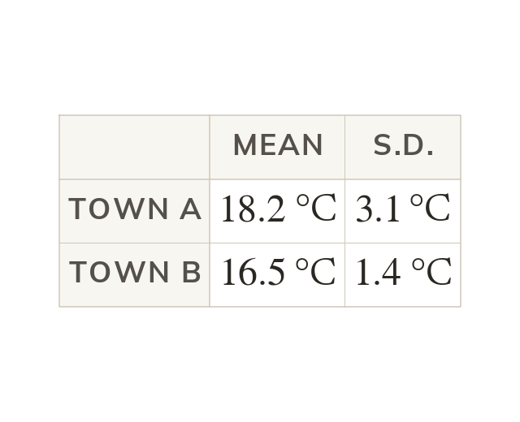
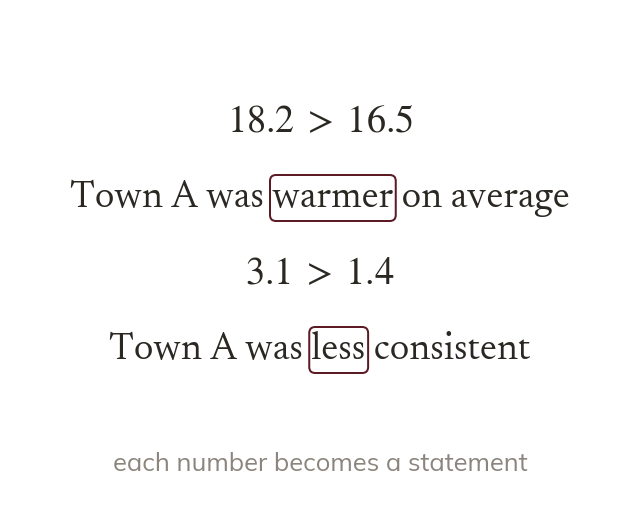
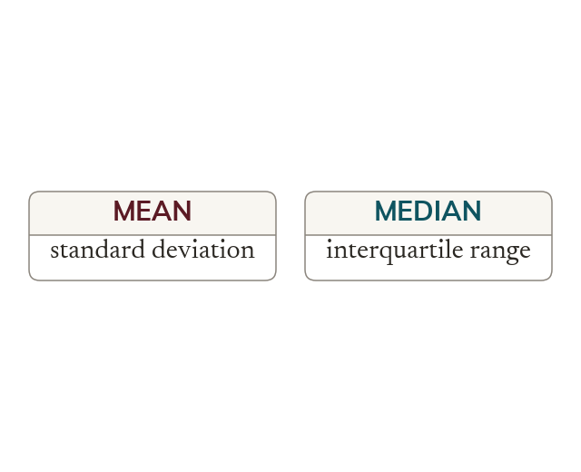
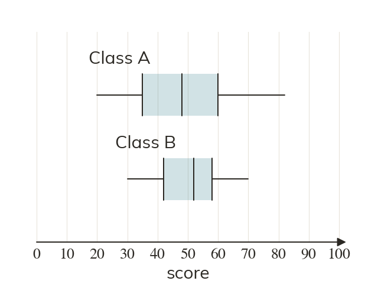
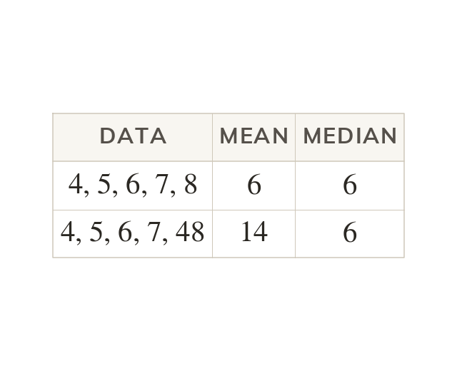
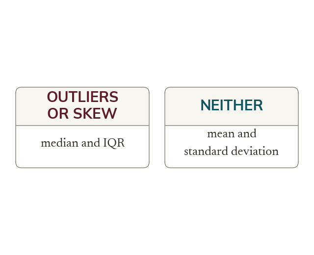
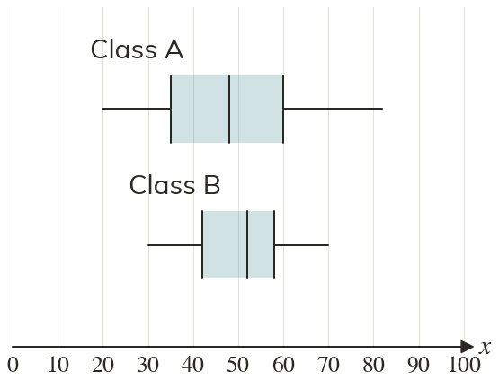
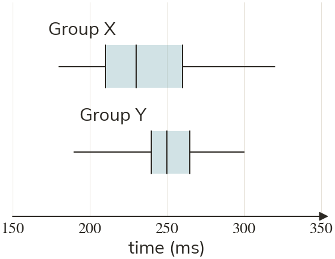

Location and spread
Compare one measure of location and one measure of spread. Then say what each means in context.
Comparing two data sets is where the chapter's measures and diagrams come together, as one measure of location and one of spread, each said in context. Choosing measures that an outlier cannot drag is what makes the comparison fair.
Work down the page at your own pace. Write every answer in your book first, then click to check it.
Read each card, then follow the worked examples one step at a time.

Compare one measure of location and one measure of spread. Then say what each means in context.

A number on its own is not a comparison. Turn each one into a statement about the data.

The mean goes with the standard deviation, and the median with the interquartile range. Do not mix them.
Pick an answer. If it's wrong, the feedback tells you which mistake it was.
Write the blanks in your book first, then tap each one to check.
Read each card, then follow the worked examples one step at a time.

Draw the two box plots on the same scale. Compare the medians, then the interquartile ranges.

An outlier pulls the mean and the standard deviation towards it. The median and the interquartile range barely move.

With outliers or a skewed shape, use the median and IQR. With neither, the mean and standard deviation use every value.

Pick an answer. If it's wrong, the feedback tells you which mistake it was.
Write the blanks in your book first, then tap each one to check.

Finished? Next lesson: S4.1 Scatter Diagrams and Correlation.
For each skill, tap the one that is true for you today. Your Revise pages start with anything you mark Not yet.
Your ratings are saved on this device only.
Log in, then search for a code to practise that skill.